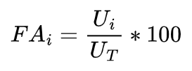
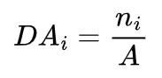
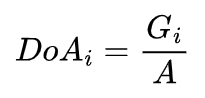
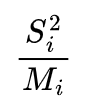
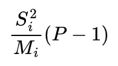
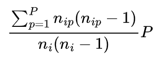

<!DOCTYPE html>
<html lang="en">
  <head>
    <meta charset="utf-8" />
    <meta name="viewport" content="width=device-width, initial-scale=1.0, maximum-scale=1.0, user-scalable=no" />

    <title></title>
    <link rel="stylesheet" href="dist/reveal.css" />
    <link rel="stylesheet" href="dist/theme/black.css" id="theme" />
    <link rel="stylesheet" href="plugin/highlight/zenburn.css" />
	<link rel="stylesheet" href="css/layout.css" />
	<link rel="stylesheet" href="plugin/customcontrols/style.css">


    <script defer src="dist/fontawesome/all.min.js"></script>

	<script type="text/javascript">
		var forgetPop = true;
		function onPopState(event) {
			if(forgetPop){
				forgetPop = false;
			} else {
				parent.postMessage(event.target.location.href, "app://obsidian.md");
			}
        }
		window.onpopstate = onPopState;
		window.onmessage = event => {
			if(event.data == "reload"){
				window.document.location.reload();
			}
			forgetPop = true;
		}

		function fitElements(){
			const itemsToFit = document.getElementsByClassName('fitText');
			for (const item in itemsToFit) {
				if (Object.hasOwnProperty.call(itemsToFit, item)) {
					var element = itemsToFit[item];
					fitElement(element,1, 1000);
					element.classList.remove('fitText');
				}
			}
		}

		function fitElement(element, start, end){

			const size = (end + start) / 2;
			element.style.fontSize = `${size}px`;

			if(Math.abs(start - end) < 1){
				return;
			}

			if(element.scrollHeight > element.offsetHeight){
				fitElement(element, start, size);
			} else {
				fitElement(element, size, end);
			}		
		}


		document.onreadystatechange = () => {
			fitElements();
			if (document.readyState === 'complete') {
				if (window.location.href.indexOf("?export") != -1){
					parent.postMessage(event.target.location.href, "app://obsidian.md");
				}
				if (window.location.href.indexOf("print-pdf") != -1){
					let stateCheck = setInterval(() => {
						clearInterval(stateCheck);
						window.print();
					}, 250);
				}
			}
	};


        </script>
  </head>
  <body>
    <div class="reveal">
      <div class="slides"><section  data-markdown><script type="text/template"># Estrutura da florestas
#ficha </script></section><section ><section data-markdown><script type="text/template">## Estrutura horizontal</script></section><section data-markdown><script type="text/template">Frequência: percentual de parcelas que contêm indivíduos de determinada espécie.
<p style="line-height: 0" class="reset-paragraph"></img></p>
Em que:
- Ui = número de parcelas com a presença da i-ésima espécie.
- UT = número total de parcelas amostradas.</script></section><section data-markdown><script type="text/template">Densidade: número de indivíduos por hectare.
<p style="line-height: 0" class="reset-paragraph"></img></p>
Em que:
- ni = número de indivíduos da i-ésima espécie.
- A = área total amostrada em hectares.</script></section><section data-markdown><script type="text/template">Dominância: expressa o grau de ocupação da área da floresta pela área basal da espécie.
<p style="line-height: 0" class="reset-paragraph"></img></p>
Em que:
- Gi= área basal da i-ésima espécie em m².
- A = área total amostrada em hectares.</script></section></section><section  data-markdown><script type="text/template">Latex:
`$$FA_i = \frac{U_i}{U_T} * 100$$`
`$$DA_i = \frac{n_i}{A}$$`
`$$DoA_i = \frac{G_i}{A}$$`</script></section><section ><section data-markdown><script type="text/template">## Estrutura paramétrica
A estrutura paramétrica é analisada com base nas estimativas dos parâmetros que expressam densidades e estoques da floresta (atributos da floresta).</script></section><section data-markdown><script type="text/template">O volume não é uma variável medida diretamente no inventário. Com base no diâmetro (e altura) estima-se o volume de cada uma das árvores amostradas. A principal técnica utilizada para o estimar volume de árvores individuais são as equações volumétricas.</script></section><section data-markdown><script type="text/template">Por muito tempo, a quantificação volumétrica das espécies amazônicas foi efetuada com base no fator de forma de 0,7. Esse valor foi empregado de forma generalizada para diferentes espécies, sítios, formações e tipologias florestais, ocasionando sérios erros nas estimativas volumétricas.</script></section><section data-markdown><script type="text/template">No início da década de 1980, aflorou a necessidade pelo aprimoramento das técnicas para estimar o volume de árvores, visando à obtenção de estimativas mais confiáveis. Desde então, diversos trabalhos foram realizados na Amazônia com esse objetivo.</script></section><section data-markdown><script type="text/template">A estrutura diamétrica é mais utilizada que o volume para caracterizar tipologias vegetais, estágios sucessionais, estados de conservação, regimes de manejo, processos de dinâmica de crescimento e produção, grupos ecológicos e como referência para o manejo.</script></section><section data-markdown><script type="text/template">O diâmetro acabou se consagrando como uma variável importante na descrição da estrutura florestal, como também na comercialização da madeira. Assim, conhecer a distribuição diamétrica é fundamental!</script></section><section data-markdown><script type="text/template">Tipos de distribuições:
- Unimodal
- Multimodal
- Normal
- J-invertido
- Contínua</script></section><section data-markdown><script type="text/template">Um histograma, também conhecido como distribuição de frequências ou diagrama das frequências, é a representação gráfica, em colunas (retângulos), de um conjunto de dados previamente tabulado e dividido em classes uniformes.</script></section><section data-markdown><script type="text/template">O método de Sturges pode ser utilizado para obtenção do n° de classes:
<p style="line-height: 0" class="reset-paragraph"></img></p>
Sendo N o número de indivíduos.</script></section></section><section  data-markdown><script type="text/template">Latex:
`$$1+3,333*log(N)$$`</script></section><section ><section data-markdown><script type="text/template">## Estrutura espacial
Padrão pode ser definido como algo que se repete com certa previsibilidade. Nem sempre os padrões são evidentes. Por isto criam-se critérios para definir matematicamente os padrões.</script></section><section data-markdown><script type="text/template">Padrão espacial pode ser derivado da definição acima como algo que se repete com certa previsibilidade no espaço.</script></section><section data-markdown><script type="text/template">O que pode influenciar o padrão espacial de uma espécie?
- Fatores abióticos
- Dispersão da espécie
- Competição e predação
- Sobrevivência
- Fatores históricos
- Fatores evolutivos</script></section><section data-markdown><script type="text/template">São três os padrões espaciais:
- Regular
- Agregada
- Aleatória</script></section><section data-markdown><script type="text/template">Os padrões espaciais sofrem forte influência da escala da análise. Para estudar o padrão espacial (agregação) de uma espécie tem-se duas abordagens: conhecer o número de indivíduos da espécie de interesse em cada parcela (parcela); e conhecer o posicionamento de cada indivíduo da espécie de interesse na área de estudo (área).</script></section></section><section  data-markdown><script type="text/template">### Variância em nível de parcela
<p style="line-height: 0" class="reset-paragraph"></img></p>
Em que:
- P = número total de parcelas
- nip = número de indivíduos da i-ésima espécie na p-ésima parcela.</script></section><section  data-markdown><script type="text/template">### Média em nível de parcela:
<p style="line-height: 0" class="reset-paragraph"></img></p>
Em que:
- P = número total de parcelas
- nip = número de indivíduos da i-ésima espécie na p-ésima parcela.</script></section><section  data-markdown><script type="text/template">### Índice de Payandeh
<p style="line-height: 0" class="reset-paragraph"></img></p>
Regra de decisão:
- Se = 1, aleatoriamente distribuído.
- Se < 1 (ou < M), regularmente distribuído.
- Se > 1, padrão agregado.</script></section><section  data-markdown><script type="text/template">### Índice de Hazen
<p style="line-height: 0" class="reset-paragraph"></img></p>
Regra de decisão:
- Se < que `$\chi$` para 75% com P-1 graus de liberdade, padrão não agrupado.
- Se > que `$\chi$` para 99% com P-1 graus de liberdade, padrão agrupado.
- Se entre os valores de `$\chi$`,  tendência ao agrupamento.</script></section><section  data-markdown><script type="text/template">### Índice de Morisita
<p style="line-height: 0" class="reset-paragraph"></img></p>
Regra de decisão:
- Se < 1, padrão uniforme ou regular. 
- Se > 1, padrão agrupado.
- Se = 1, padrão aleatório.</script></section><section  data-markdown><script type="text/template">Latex:
`$$S^2_i = \frac{\sum_{p=1}^P n^2_{ip} - (\frac{\sum_{p=1}^P n_{ip}}{P})^2}{P-1}$$`
`$$M_i = \frac{\sum_{p=1}^P n_{ip}}{P}$$`</script></section><section  data-markdown><script type="text/template">Latex:
`$$\frac{S^2_i}{M_i}$$`
`$$\frac{S^2_i}{M_i} (P-1)$$`
`$$\frac{\sum_{p=1}^P n_{ip}(n_{ip}-1)}{n_i(n_i - 1)} P$$`</script></section></div>
    </div>

    <script src="dist/reveal.js"></script>

    <script src="plugin/markdown/markdown.js"></script>
    <script src="plugin/highlight/highlight.js"></script>
    <script src="plugin/zoom/zoom.js"></script>
    <script src="plugin/notes/notes.js"></script>
    <script src="plugin/math/math.js"></script>
	<script src="plugin/mermaid/mermaid.js"></script>
	<script src="plugin/customcontrols/plugin.js"></script>

    <script>
      function extend() {
        var target = {};
        for (var i = 0; i < arguments.length; i++) {
          var source = arguments[i];
          for (var key in source) {
            if (source.hasOwnProperty(key)) {
              target[key] = source[key];
            }
          }
        }
        return target;
      }

      // default options to init reveal.js
      var defaultOptions = {
        controls: true,
        progress: true,
        history: true,
        center: true,
        transition: 'default', // none/fade/slide/convex/concave/zoom
        plugins: [
          RevealMarkdown,
          RevealHighlight,
          RevealZoom,
          RevealNotes,
          RevealMath.MathJax3,
		  RevealMermaid,
		  RevealCustomControls,
        ],

		mathjax3: {
			mathjax: 'plugin/math/mathjax/tex-mml-chtml.js',
		},

		customcontrols: {
			controls: [
			]
		},
      };

      // options from URL query string
      var queryOptions = Reveal().getQueryHash() || {};

      var options = extend(defaultOptions, {"width":960,"height":700,"margin":0.04,"controls":true,"progress":true,"slideNumber":true,"transition":"slide","transitionSpeed":"default"}, queryOptions);
    </script>

    <script>
      Reveal.initialize(options);
    </script>
  </body>
</html>
